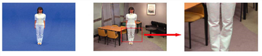
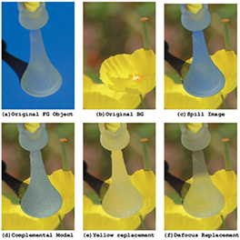

对前景物体溢出的适当处理是灵长类动物的许多有用特征之一。可以在四种模式之间移动，以查看它们如何影响正在使用的图像剪辑。下 泄漏 过程 ,在 替换 与 下拉菜单中，您可以选择以下选项:
• 没有 抑制 -在此模式下，不应用抑制。
• 补语 -这是默认的溢出替换模式。此模式保持良好的前景细节，并提供最佳质量结果。如果前景溢出不是主要问题，则应该使用此模式。的 补语 模式对前景溢出很敏感。如果前景图像上的溢出强度相当大，这种模式通常会在生成的复合材料中引入严重的噪声。
| 的 补语 模式保持精细的细节。 |
|
|
| 复合材料中的严重噪音。 |
• 纯色 -在 纯色 模式下，溢出组件被可以选择的调色板颜色替换。而在 补语 模式只使用背衬颜色补充来消除原始前景中的少量溢出, 纯色 模式尝试使用用户定义的调色板颜色来缓解噪音。更改固体替换的调色板颜色，您可以应用与复合背景匹配的良好溢出替换。它的优势在于，它在严重的蓝色泄漏条件下也能正常工作。
在消极的一面，当使用 纯色 模式下，前景边缘的精细细节往往会丢失。如果背景图像有一些高对比度颜色区域，单一调色板颜色有时不能形成良好的色调。
|
 |
| 用纯色替换平滑溢出处理。 |
• 散焦背景 -The 散焦背景 模式使用背景图像的非聚焦副本来确定溢出替换颜色，而不是纯色或仅补充颜色。这种模式可以在前景对象上产生良好的色调，即使具有高对比度背景。如下例所示，使用此功能甚至可以从磨砂玻璃中去除溢出，并且仍然保持半透明。
在消极的一面, 散焦背景 模式有时会导致前景对象的精细边缘细节丢失。如果您想以后根据背景更改前景图像的大小，可能会出现另一个问题。由于背景/前景对齐方式会发生变化，因此来自非聚焦图像的应用色调可能与新对齐方式不匹配。
|
 |
|
磨砂玻璃物体的蓝色抑制。 |
|
|